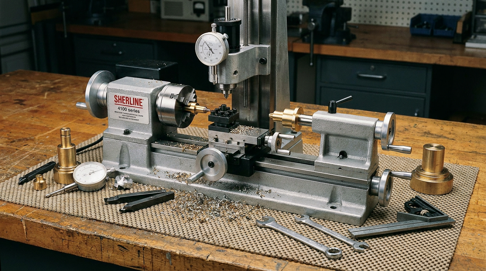

Sherline Lathes & Milling Attachments
Precision micro-machining and custom metalworking. From miniature model engine bushings to specialized RF connector fittings, Sherline precision tools bridge the gap between digital CAD models and physical metal hardware.
Sherline Model 4100 Precision Micro-Lathe System

The Sherline Model 4100 Series (3.5" x 8" Short Bed Lathe) is a precision miniature metalworking lathe engineered for high-accuracy turning, facing, boring, and thread cutting on small-scale workpieces. Equipped with electronic variable-speed DC motors, ground steel bedways, and handwheels calibrated in 0.001" increments, this precision tool holds tolerances down to ±0.0005" in brass, aluminum, stainless steel, bronze, and Delrin.
Precision Spindle & Headstock
Pre-loaded ball bearings, #1 Morse taper spindle bore, and 3/4"-16 external spindle thread accepting 3-jaw scroll chucks, 4-jaw independent chucks, and WW collet adapters.
Variable Speed & Drive
Smooth 70 to 2800 RPM electronic speed control providing continuous high torque even at low speeds for delicate threading and knurling operations.
Quick-Change Tooling
Quick-change tool post system with adjustable height blocks for high-speed steel (HSS) and carbide indexable cutting tools, parting blades, and boring bars.
Vertical Milling Column & Table Attachments
By mounting a vertical milling column attachment directly to the lathe bed or utilizing a dedicated Sherline vertical milling table attachment, the setup transforms into a versatile 3-axis precision milling machine. This allows drilling, slotting, keyway cutting, fly cutting, and complex contour milling on intricate components without investing in a separate large-footprint mill.
Vertical Column Conversion
Rigid vertical column attachment converts the lathe headstock into a 3-axis vertical mill with precision Z-axis lead-screw feed controls.
T-Slot Milling Table & Vise
Precision-machined aluminum T-slot table attachment paired with a 2" precision toolmaker's vise for rigid workpiece clamping during milling and slotting operations.
4" Precision Rotary Table
Handwheel-driven rotary table attachment enabling circular bolt patterns, curved slotting, gear cutting, and radial indexing for model aircraft components.
Custom Tooling & Model Aviation Projects
| Component / Project | Material | Machining Operations | Application |
|---|---|---|---|
| Control Line Engine Bushings | 6061-T6 Aluminum / Bronze | Precision turning, internal reaming, facing | Custom crankshaft sleeve bearings & prop hubs for glow engines |
| Model Plane Landing Gear Housings | 7075 Aluminum / Brass | Vertical milling, pocketing, precision drilling | Custom shock-absorbing strut brackets & pivot blocks |
| RF Connector Adapters & Enclosures | C360 Brass / Delrin | Boring, external threading, face groove milling | Ham radio impedance matching networks & coaxial feedthroughs |
| Eagle One Timer Standoffs | 6061-T6 Aluminum | Tapping, knurling, chamfering, parting | Custom mounting standoffs for KidVenture electronic flight timers |
Resources & Technical References
Sherline 4100 Lathe Manual
Official Sherline 4000/4100 Series 3.5" x 8" Lathe Assembly & Operating Instructions PDF manual and exploded parts diagram.
View 4100 Lathe Manual (PDF)Vertical Milling Column Manual
Instructions for mounting and aligning the vertical milling column and T-slot milling table attachments on Sherline lathes.
View Milling Manual (PDF)Onshape CAD & Machining Models
Explore 3D CAD models engineered in Onshape for custom Sherline fixtures, tool posts, and milling setups.
View Onshape CAD